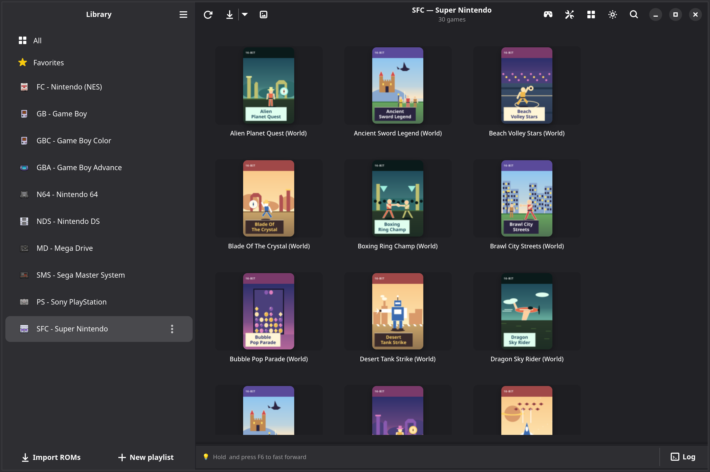
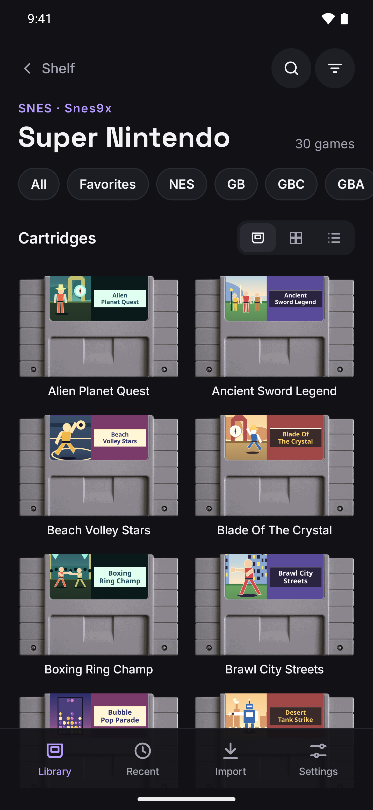

உங்கள் பழைய விளையாட்டுத் தொகுப்பு,
விளையாடத் தயார்.
உங்களிடம் உள்ள விளையாட்டுகளைச் சேர்க்கவும். Linux, Windows, Android ஆகியவற்றில் OpenEmux அவற்றை அட்டைப் படங்களுடன் கன்சோல் வாரியாக அடுக்குகிறது.
நிறுவுவது எப்படி ↓ ▶ காணொளியைப் பார்க்க (44 வி)
இலவசம், திறந்த மூலம் · MIT உரிமம் · Linux-இல் AppImage, .deb, .rpm & Flatpak · Windows-இல் installer & portable ZIP · Android-க்கு APK (GPLv3)
macOS-க்கான OpenEmu-வால் ஈர்க்கப்பட்டது, ஆனால் இது ஒரு fork அல்ல: எமுலேஷனுக்கு RetroArch-ஐப் பயன்படுத்தும் தனிக் குறியீடு. இதைப் பற்றி மேலும்.


ஒரு சாதனத்திலிருந்து இன்னொன்றுக்கு.
ஒரே Wi-Fi இல், கணினியிலிருந்து தொலைபேசிக்கு அல்லது திரும்ப ஒரு விளையாட்டை அனுப்புங்கள். கணக்கு, மேகம், கேபிள் எதுவும் தேவையில்லை.


ஒவ்வொரு கன்சோலும், கார்ட்ரிட்ஜ்களாக.
ஒவ்வொரு கன்சோலுக்கும் ஒரு பக்கம், அதன் விளையாட்டுகள் அவற்றின் கார்ட்ரிட்ஜ்களில். விரும்பும்போது அட்டைகள் அல்லது பட்டியலுக்கு மாறலாம்.


காட்டப்படும் கேம்கள் கற்பனையானவை, விளக்கத்திற்காக மட்டுமே. இவை இந்த கன்சோல்களுக்கான உண்மையான கேம்கள் அல்ல, அவற்றின் படங்கள் AI மூலம் உருவாக்கப்பட்டவை.
ஒவ்வொரு கன்சோலுக்கும் ஒரு கட்டுப்படுத்தி.
Android இல், ஒவ்வொரு கன்சோலுக்கும் நிலை மற்றும் கிடை வாக்கில் அதன் சொந்தத் திரைக் கட்டுப்படுத்தி உண்டு. கேம்பேடை இணைத்தால் அது விலகிவிடும்.


காட்டப்படும் கேம்கள் கற்பனையானவை, விளக்கத்திற்காக மட்டுமே. இவை இந்த கன்சோல்களுக்கான உண்மையான கேம்கள் அல்ல, அவற்றின் படங்கள் AI மூலம் உருவாக்கப்பட்டவை.
Android 8 அல்லது புதியது, 64-பிட் (arm64). Android செயலி RetroArch-இன் ஃபோர்க் என்பதால் GPLv3 உரிமம் பெற்றது; மூலக் குறியீடு openemux-android-இல் உள்ளது.
ஒவ்வொரு விளையாட்டும் தன் கன்சோலின் கேட்ரிட்ஜில்
கேட்ரிட்ஜ் காட்சியில், நீங்கள் சேர்த்த விளையாட்டுகள் அவற்றின் கன்சோலின் கேட்ரிட்ஜில் லேபிள் ஓவியத்துடன் தோன்றும். கீழே உள்ள கேட்ரிட்ஜ்கள் அந்தக் காட்சிக்கான ஓர் எடுத்துக்காட்டு.
நிறுவுதல்
Debian, Ubuntu, Fedora ஆகியவற்றுக்கான தொகுப்புகள், ஒரு AppImage, ஒரு Flatpak, Windows-க்கான நிறுவி, Android-க்கான APK ஆகியவை உள்ளன. முதல் துவக்கத்தில் மீதியை OpenEmux அமைக்கிறது.
Linux
Sandbox-இல், தானாகப் புதுப்பிக்கப்படும்
Flathub-இலிருந்து RetroArch-ஐ நிறுவவும்:
flatpak install -y flathub org.libretro.RetroArchOpenEmux களஞ்சியத்தைச் சேர்த்து OpenEmux-ஐ நிறுவவும்:
flatpak remote-add --if-not-exists --no-gpg-verify \ openemux https://guilhermefeitosa66.github.io/openemux-flatpak/repo flatpak install -y openemux io.github.guilhermefeitosa66.OpenEmuxபுதுப்பிப்புகள்
flatpak updateமூலம் வரும்.
பதிவிறக்கிய தொகுப்பை நிறுவ விரும்புகிறீர்களா? படி 1-க்குப் பிறகு இயக்கவும்:
flatpak install -y ./OpenEmux-*.flatpakஎந்த distro-வும்
மேலே உள்ள பொத்தானால் பதிவிறக்கவும்.
இயக்கக்கூடியதாக்கி இயக்கவும்:
chmod +x OpenEmux-*-x86_64.AppImage ./OpenEmux-*-x86_64.AppImageFUSE இல்லையா? முன்னால்
APPIMAGE_EXTRACT_AND_RUN=1சேர்க்கவும்.
Debian / Ubuntu
Ubuntu 24.04 LTS அல்லது அதற்குப் புதியது.
மேலே உள்ள பொத்தானால் பதிவிறக்கவும்.
சேமித்த கோப்புறையிலிருந்து நிறுவவும்:
sudo apt install ./openemux_*_amd64.deb
Fedora
Fedora 40 அல்லது அதற்குப் புதியது.
மேலே உள்ள பொத்தானால் பதிவிறக்கவும்.
சேமித்த கோப்புறையிலிருந்து நிறுவவும்:
sudo dnf install ./openemux-*.x86_64.rpm
Windows Beta
இரண்டு பதிப்புகளிலும் GTK 4, Python runtime, RetroArch ஆகியவை உள்ளேயே உள்ளன, எனவே அவற்றுடன் வேறு எதையும் நிறுவ வேண்டியதில்லை. Windows 10 அல்லது 11, 64-bit. இது புதியது — ஏதாவது சரியாக வேலை செய்யவில்லை என்றால், ஒரு issue-ஐத் திறங்கள்.
வழக்கமான வழி
மேலே உள்ள பொத்தானால் பதிவிறக்கவும்.
OpenEmux-*-setup.exe-ஐத் திறந்து நிறுவியின் வழிமுறைகளைப் பின்பற்றவும்.உங்கள் பயனருக்கு மட்டும் நிறுவப்படும், எனவே நிர்வாகி அனுமதி கேட்கப்படாது. பதிப்புகள் இன்னும் code-sign செய்யப்படவில்லை: SmartScreen எச்சரிக்கை காட்டும், More info → Run anyway மூலம் அதைக் கடந்து செல்லலாம்.
எதுவும் நிறுவப்படாது
மேலே உள்ள பொத்தானால் பதிவிறக்கவும்.
எங்கு வேண்டுமானாலும் unzip செய்து,
OpenEmux.exe-ஐ இயக்குங்கள்; அது உள்ளே உள்ளOpenEmux\கோப்புறையில் இருக்கும். அமைப்புகள், நூலகம், saves, அட்டைப் படங்கள் அனைத்தும் அதன்data\கோப்புறையிலேயே இருக்கும்; உங்கள் பயனர் சுயவிவரத்தில் எதுவும் எழுதப்படாது, எனவே USB stick-இலிருந்தே இயங்கும். கோப்புறை வேறு இயக்கி எழுத்தில் வந்தால், ROM கோப்புறையை மீண்டும் தேர்ந்தெடுத்து மறுபடி scan செய்யுங்கள்.
Android
APK இன்னும் Play Store-இல் இல்லை: Releases-இலிருந்து பதிவிறக்கி, Android கேட்கும்போது உலாவி அல்லது கோப்பு மேலாளருக்குச் செயலிகளை நிறுவ அனுமதி கொடுங்கள். Android 8 அல்லது புதியது, 64-பிட்.
APK-ஐ நிறுவுங்கள்
மேலே உள்ள பொத்தானால் பதிவிறக்கவும்.
பதிவிறக்கிய கோப்பைத் திறந்து உறுதிப்படுத்துங்கள். புதுப்பிப்புகளும் அதே வழியில், முந்தைய பதிப்பின் மேல் நிறுவப்படும்.
கோர்களைப் பதிவிறக்க விடுங்கள்
முதல் முறை திறக்கும்போது செயலி எமுலேட்டர் கோர்களைப் பதிவிறக்குகிறது. பிறகு உங்கள் ROM-களை இறக்குமதியில் சேருங்கள், அல்லது தொலைபேசியில் Android/data/com.openemux.mobile/files/roms-இல் வையுங்கள்.
உங்கள் பதிவிறக்கத்தைச் சரிபாருங்கள்
ஒவ்வொரு release-உடனும் ஒரு SHA256SUMS கோப்பு வருகிறது. நீங்கள் பதிவிறக்கிய கோப்பின் அருகில் அதை வைத்து இதை இயக்குங்கள்:
sha256sum -c SHA256SUMS --ignore-missingOK என்றால், வெளியிடப்பட்ட கோப்பே அப்படியே உங்களிடம் உள்ளது. வேறு எதுவாக இருந்தாலும் கோப்பு சிதைந்துள்ளது அல்லது மாற்றப்பட்டுள்ளது — அதை இயக்காதீர்கள்.
Windows-இல் PowerShell hash-ஐக் காட்டும், அதை SHA256SUMS-இல் உள்ள பொருந்தும் வரியுடன் கண்ணால் ஒப்பிட்டுப் பாருங்கள்:
Get-FileHash .\OpenEmux-*-setup.exe -Algorithm SHA256Releases பக்கத்தில் உள்ள எல்லாக் கோப்புகளும் →
நீங்களே build செய்ய விரும்புகிறீர்களா? make bootstrap && make run — build வழிமுறைகளைப் பாருங்கள்.
மற்ற அனைத்தும்
RetroArch மீது கட்டப்பட்டது
பின்னணியில் எமுலேஷனை RetroArch செய்கிறது. அது சக்திவாய்ந்தது, ஆனால் விளையாட மட்டும் விரும்புபவருக்கு அதன் மெனுக்களும் அமைப்புகளும் அதிகமாகத் தோன்றலாம். அதைச் சுற்றியுள்ளவற்றை OpenEmux கவனித்துக்கொள்கிறது: உங்கள் விளையாட்டுகளை ஒழுங்குபடுத்துதல், கோர்களைப் பதிவிறக்குதல், கட்டுப்பாடுகளையும் ஷேடர்களையும் அமைத்தல்.
உங்கள் விளையாட்டுகள், கன்சோல் வாரியாக
நீங்கள் சேர்க்கும் விளையாட்டுகள் கன்சோல் வாரியாகத் தொகுக்கப்படுகின்றன; அட்டைப் படங்கள் libretro சிறுபட காப்பகத்திலிருந்து பதிவிறக்கப்படுகின்றன.
முதல் துவக்கத்திலேயே தயார்
முதல் முறை திறக்கும்போது, OpenEmux தன் அமைப்புகளை உருவாக்கி, உங்கள் கன்சோல்களுக்குத் தேவையான கோர்களைப் பதிவிறக்குகிறது; பொதுவாக சுமார் பத்து வினாடிகள். மீதமுள்ளவை பின்னணியில் தொடர்ந்து பதிவிறக்கப்படுகின்றன.
கன்சோல் வாரியான கட்டுப்பாடுகள்
ஒவ்வொரு கன்சோலுக்கும் விசைப்பலகை மற்றும் கேம்பேட் பொத்தான்களை ஒரே பலகத்தில் அமைக்கலாம். விளையாட்டு தொடங்கும்போது OpenEmux அவற்றை RetroArch-க்கு அனுப்புகிறது.
கன்சோல் வாரியான ஷேடர்கள்
ஒவ்வொரு கன்சோலுக்கும் CRT அல்லது ஸ்கேன்லைன் ஷேடரை ஒரு சிறிய பட்டியலிலிருந்து தேர்ந்தெடுக்கலாம்; RetroArch-இன் ஷேடர் மெனுவுக்குள் செல்ல வேண்டியதில்லை.
BIOS சரிபார்ப்புப் பட்டியல்
ஒவ்வொரு கன்சோலுக்கும் தேவையான BIOS கோப்புகளையும், உங்களிடம் ஏற்கனவே உள்ளவற்றையும் காட்டுகிறது; ஒரு கோப்பு இல்லாததால் விளையாட்டு எதுவும் சொல்லாமல் தொடங்காமல் போவதைத் தவிர்க்கிறது.
Linux முதலில்
OpenEmux-இன் முதன்மைத் தளம் Linux. இந்தப் பயன்பாடு GTK4 மற்றும் Adwaita கொண்டு உருவாக்கப்பட்டு, GNOME வழிகாட்டுதல்களைப் பின்பற்றுகிறது; ஒவ்வொரு மாற்றமும் முதலில் Linux-இல் சோதிக்கப்படுகிறது. Windows-உம் ஆதரிக்கப்படுகிறது; அதன் பதிப்பு இன்னும் பீட்டாவில் உள்ளது.
ஒவ்வொரு கன்சோலுக்கும் ஒரு கட்டுப்பாடு
31 கன்சோல்களுக்கும் அசல் கட்டுப்பாட்டியின் வடிவில் தனித் திரைக் கட்டுப்பாடு உண்டு, நெடுக்கிலும் கிடைமட்டத்திலும். படத்தின் கீழ் உள்ள பட்டை சேமிக்கிறது, ஏற்றுகிறது, டர்போவை இயக்குகிறது, விளையாட்டை வேகப்படுத்துகிறது.
கார்ட்ரிட்ஜ்களும் அட்டைகளும்
விளையாட்டுகள் லேபிள்களுடன் கார்ட்ரிட்ஜ்களாகவோ, அட்டைகளாகவோ, பட்டியலாகவோ தெரியும். அலமாரிகளை நீங்கள் விரும்பும் வரிசையில் வைக்கலாம்.
ஒரு பதிவிறக்கத்தில் தயார்
செயலி கோர்களைக் கொண்டுவருவதில்லை: முதல் முறை திறக்கும்போது RetroArch buildbot-இலிருந்து எல்லா கன்சோல்களுக்குமான கோர்களையும், PSP மற்றும் GameCube பயன்படுத்தும் கணினிக் கோப்புகளையும் பதிவிறக்குகிறது.
கேம்பேடுடனும்
கட்டுப்பாட்டியை இணைத்தால் திரைக் கட்டுப்பாடு விலகும்: விளையாட்டு முழுத் திரையையும் எடுக்கும், மெனுக்கள் திசைப் பொத்தானையும் பொத்தான்களையும் பின்பற்றும்.
வெளிர் மற்றும் இருள்
தொலைபேசியின் தீமைப் பின்பற்றும், அல்லது அமைப்புகளில் ஒன்றைத் தேர்வு செய்யுங்கள்.
எட்டு மொழிகள்
கணினி செயலியின் அதே மொழிகள், தொலைபேசியைப் பின்பற்றியோ அமைப்புகளில் தேர்ந்தெடுத்தோ.
RetroAchievements
அமைப்புகளில் ஒருமுறை உள்நுழையுங்கள்; ஒவ்வொரு விளையாட்டும் உங்கள் RetroAchievements சுயவிவரத்தில் சாதனைகளைத் திறக்கும், விரும்பினால் ஹார்ட்கோர் பயன்முறையுடன்.
உங்களுக்குச் சொந்தமான விளையாட்டுகளை விளையாடுங்கள்
OpenEmux என்பது RetroArch-க்கான முகப்பு; விளையாட மட்டும் விரும்புபவர் முதலில் RetroArch-இன் மெனுக்களைக் கற்க வேண்டியதில்லை என்பதற்காக உருவாக்கப்பட்டது. இது விளையாட்டுகளின் மூலம் அல்ல: விளையாட்டுகள், ROM-கள், BIOS கோப்புகள் எதையும் வழங்குவதில்லை, ஒருபோதும் வழங்காது.
- சட்டப்படி உங்களுக்குச் சொந்தமான உள்ளடக்கத்தை மட்டுமே பயன்படுத்துங்கள். உங்கள் சொந்த கார்ட்ரிட்ஜ்களையும் டிஸ்க்குகளையும் dump செய்யுங்கள், அல்லது நீங்கள் வாங்கிய விளையாட்டுகளின் காப்புப்பிரதிகளைப் பயன்படுத்துங்கள்.
- இது திருட்டுக்கானது அல்ல. உங்களுக்குச் சொந்தமில்லாத பதிப்புரிமை பெற்ற விளையாட்டுகளைப் பதிவிறக்குவது பெரும்பாலான நாடுகளில் சட்டவிரோதம்.
- எமுலேஷன் வரலாற்றைப் பாதுகாக்க உதவுகிறது. விளையாட்டுகளின் கலை, இசை, வடிவமைப்பு ஆகியவற்றில் பெரும்பகுதி பழமையாகி வரும் வன்பொருளில்தான் உள்ளது. அவற்றை விளையாடக்கூடியதாக வைத்திருப்பது பயனுள்ளது; இந்த விளையாட்டுகளை உருவாக்கியவர்களை மதிக்கும்போது அது சிறப்பாக நடக்கிறது.
31 கன்சோல்கள்
ஒவ்வொரு அமைப்பும் RetroArch-இன் சொந்த கோர்களில் இயங்குகிறது; OpenEmux-இல் ஒவ்வொன்றுக்கும் தனி அட்டைப் படங்கள், கட்டுப்பாடுகள், ஷேடர் அமைப்புகள் உள்ளன.
OpenEmu-வால் ஈர்க்கப்பட்டது, RetroArch-ஆல் இயங்குகிறது
OpenEmux, macOS-க்கான எமுலேட்டர் முகப்பான OpenEmu-வால் ஈர்க்கப்பட்டது. OpenEmu macOS-இல் மட்டுமே இயங்குவதால், OpenEmux அதே போன்ற அனுபவத்தை Linux-இலும், இப்போது Windows-இலும் தர முயல்கிறது. இது OpenEmu-வின் நகல் (fork) அல்ல, அதனுடன் எந்தக் குறியீட்டையும் பகிர்ந்துகொள்வதில்லை: Python, GTK 4, libadwaita-வில் எழுதப்பட்ட தனிக் குறியீடு இது, எமுலேஷன் RetroArch, libretro திட்டங்களிலிருந்து வருகிறது. கன்சோல் ஐகான்கள் OpenEmu-வின் கலைப்படைப்புகள், OpenEmu-வின் BSD உரிமத்தின் கீழ் நன்றியுடன் குறிப்பிடப்பட்டுள்ளன. Android செயலி தனி வடிவமைப்பு (தொலைபேசிகளுக்கு OpenEmu இல்லை). OpenEmux, OpenEmu Team-உடன் இணைந்ததும் அல்ல, அவர்களால் அங்கீகரிக்கப்பட்டதும் அல்ல. இந்தத் திட்டங்கள் அனைத்தின் உழைப்பு இல்லாமல் இவை எதுவும் இருந்திருக்காது. ❤️
OpenEmux ஒரு கட்டற்ற மென்பொருள்
இது இலவசம், அதன் குறியீடு MIT உரிமத்தின் கீழ் திறந்துள்ளது. உதவ விரும்பினால், பிழை அறிக்கைகள், மொழிபெயர்ப்புகள், குறியீடு, யோசனைகள் எப்போதும் வரவேற்கப்படும். r/OpenEmux-இல் உதவி கேட்கலாம், உங்கள் அமைப்பைப் பகிரலாம், அல்லது நடந்துகொண்டிருக்கும் வேலையைப் பின்தொடரலாம்.